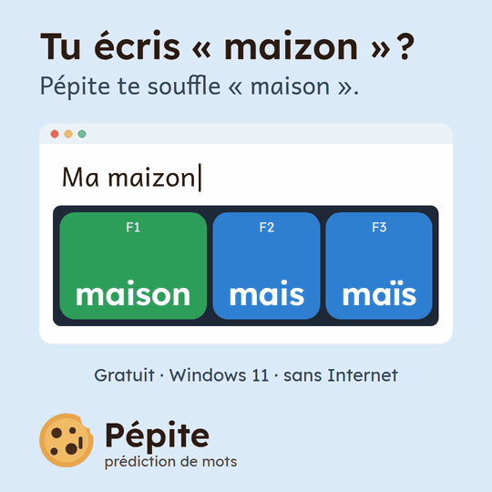
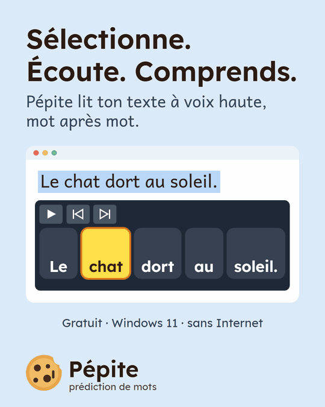
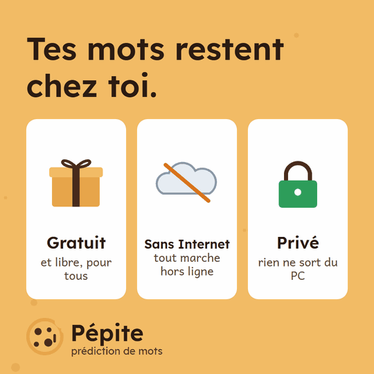
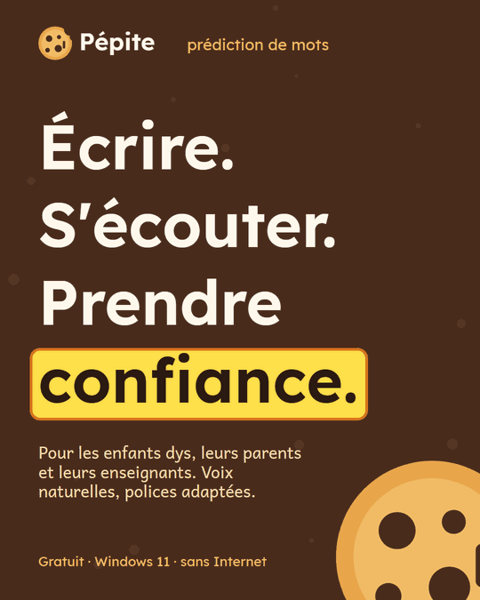

Pépite : la version de test 0.11.1 est là
Pépite propose des mots pendant que l'on écrit, avec une image, et peut les lire à voix haute. C'est un logiciel libre et gratuit pour Windows, qui fonctionne sans Internet. Voici sa nouvelle version publique, encore une version de test (bêta), pour les enseignants et les parents qui veulent bien l'essayer avec nous. Merci !
Pépite 0.11.1, version de test
Préversion du 28 novembre 2026, pour Windows 11 (64 bits). Un seul fichier d'installation, d'environ 250 Mo.
Le fichier s'appelle Pepite-0.11.1-installation.exe. Tous les détails de cette version : la page de la version 0.11.1 sur GitHub.
Le mode d'emploi : l'aide de Pépite, en particulier Installer et Enseignants et parents. La même aide est installée avec Pépite et s'ouvre sans Internet.
Ce qui change d'une version à l'autre, expliqué simplement : les nouveautés de Pépite.
Windows va vous avertir : c'est normal
Pourquoi un avertissement ? Pépite est un logiciel libre tout récent, encore peu téléchargé : Microsoft ne le « connaît » pas encore, et cette version de test n'est pas encore signée. Le navigateur, puis Windows, affichent donc un avertissement. Cela ne veut pas dire que le fichier est dangereux, ni qu'un virus a été trouvé.
Pour être tranquille, téléchargez Pépite uniquement depuis cette page ou depuis github.com/pepite-labs/pepite.
1. Pendant le téléchargement (Microsoft Edge)
Edge peut afficher : Pepite-0.11.1-installation.exe n'est pas fréquemment téléchargé
. Pour garder le fichier :
Appuyez sur Ctrl + J : la liste des téléchargements s'ouvre.
À côté du fichier, cliquez sur « … » (plus d'actions).
Cliquez sur « Conserver ».
Cliquez sur la petite flèche ⌄ juste à côté de « Supprimer » (pour afficher plus d'options), puis sur « Conserver quand même ».
Avec un autre navigateur, le principe est le même : choisissez de conserver le fichier.
2. Au lancement de l'installation
Double-cliquez sur le fichier téléchargé. Une fenêtre bleue peut s'afficher : Windows a protégé votre ordinateur
.
Cliquez sur « Informations complémentaires ».
Vérifiez le nom de l'application : Pepite-0.11.1-installation.exe. « Éditeur inconnu » est normal pour cette version de test.
Cliquez sur « Exécuter quand même ». L'installation de Pépite commence.
Ne désactivez pas SmartScreen. Il protège votre ordinateur. Il suffit d'accepter une fois, pour ce fichier-là.
Si Windows bloque le fichier sans proposer « Exécuter quand même » (c'est le « Smart App Control » de certains ordinateurs), cette version ne peut pas être installée sur cet ordinateur : il faudra attendre une version signée.
Ce qu'il faut
- Windows 11, 64 bits, avec un processeur Intel ou AMD (pas les ordinateurs à processeur ARM). Windows 10 n'est pas pris en charge : l'installation s'arrête avec un message.
- 8 Go de mémoire conseillés. Avec moins de 4 Go, l'installation affiche un avertissement, mais reste possible.
- Environ 460 Mo de place sur le disque, avec les images et la voix naturelle. Un disque SSD est conseillé.
- Rien d'autre à installer. Après le téléchargement, Internet n'est plus nécessaire.
Être testeur, concrètement
C'est une version de test (préversion) : elle peut encore avoir des défauts. Elle est faite pour être essayée, pas encore pour un usage de tous les jours en classe. Essayez-la d'abord vous-même.
- Notez ce qui ne marche pas, ce qui surprend, ce qui plaît : chaque avis compte, même court.
- Pour un problème, dites ce que vous faisiez, dans quelle application vous écriviez, et ce qui s'est passé. Une capture d'écran aide beaucoup.
- Envoyez-le par e-mail (voir Contact) ou, si vous avez un compte GitHub, ouvrez un ticket : signaler un problème ou proposer une idée.
- Pépite n'envoie rien tout seul : rien ne quitte l'ordinateur. C'est vous qui choisissez ce que vous nous écrivez.
- Pas de mise à jour automatique : les nouvelles versions de test seront annoncées ici. Pour mettre à jour, il suffit d'installer la nouvelle version ; les réglages et les profils sont gardés.
Pépite en images




Contact
Pépite est développé par Rodolphe Cardon. Pour un avis, une question ou un problème, écrivez-lui :
cardon.rodolphe @ gmail.com
Recopiez l'adresse sans les espaces autour du « @ ».
Une faille de sécurité se signale en privé : signalement privé sur GitHub.
Pour les informaticiens
Empreinte SHA-256 de Pepite-0.11.1-installation.exe : dans le fichier SHA256SUMS.txt de la page de la version 0.11.1.
Vérification dans PowerShell, dans le dossier du fichier :
Get-FileHash .\Pepite-0.11.1-installation.exe
Provenance : le fichier a été construit par GitHub Actions à partir de l'étiquette v0.11.1 du dépôt. Avec l'outil gh, après gh auth login :
gh attestation verify Pepite-0.11.1-installation.exe --repo pepite-labs/pepite --signer-workflow pepite-labs/pepite/.github/workflows/app.yml --source-ref refs/tags/v0.11.1
Installation silencieuse pour tous les utilisateurs (compte administrateur ou SYSTEM) :
Pepite-0.11.1-installation.exe /VERYSILENT /SUPPRESSMSGBOXES /NORESTART /ALLUSERS
Les autres paramètres (/CURRENTUSER, /COMPONENTS, /TASKS, /CONFIG, /LOG), les codes de retour, la configuration d'établissement et la désinstallation silencieuse : DEPLOIEMENT.txt. Voir aussi le LISEZ-MOI.